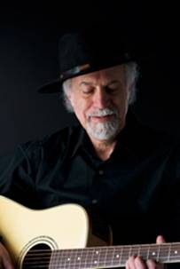
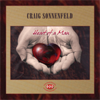
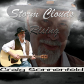
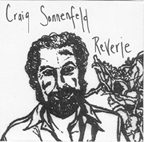

Jester-Knight
Literature
Film
Music
Visual Art
Tributes
Submissions
Links
Contact
Craig Sonnenfeld

Biography
Born and raised a block from the Atlantic Ocean on the South Jersey shore, Craig Sonnenfeld grew up during the folk-boom of the 60's and often would travel to nearby Philadelphia to see and hear artists such as Bob Dylan, Gordon Lightfoot, Tom Paxton, Eric Andersen, Linda Ronstadt and many others.
Craig began to study finger-picking style guitar as a teenager with famed folk and blues artist Philadelphia Jerry Ricks. Craig played during his high school and college years at several Jersey venues and won a songwriting and performing contest at the age of 16 in Ocean City, New Jersey.
Although he continued to love and listen to music after graduating from Rutgers University, careers in teaching, the mental health field, graduate school, family, and a career in information technology (in which he still works today) took a lot of time and effort and his playing fell by the wayside.
The urge to write and perform returned in recent years and Craig began playing open-mikes and other venues in the greater Boston area, where he has made his home for his entire adult life.
Encouraged by audience responses, Craig continues to write and perform and has released three CDs which have received radio play nationally and internationally.
Read Craig's article: Paul Rishell – Master of the Country Blues Guitar
Click below for Craig's work
(If you're using Internet Explorer, you may need to click twice)
Catch Some Z's (.mp3)
Since You Said We're Through (.mp3)

Heart of a Man - This 2008 release again has all
original songs with Craig
accompanied by various musicians. Billy Novick guest stars on mandolin
and saxophone on two of the cuts and Deb Cowan shares vocals on 'Hills
of
Wicklow. Most songs deal with various aspects of love and relationships.

Storm Clouds Rising - This 2005 release has all
original songs by Craig
accompanied by Steve Rapson - guitar, Valerie Thompson - cello, Lee
Adler
- keyboards, Deb Blackadar - percussion on various cuts. Original songs
written in traditional folk and blues genres.

Reverie - This is Craig's 2004 debut CD. All
original songs by Craig except for
the traditional song 'Wayfaring Stranger'. All vocals and acoustic
guitar
by Craig.
Craig Sonnenfeld performing Diamond Dove
Craig Sonnenfeld performing on NECN's Coffeehouse